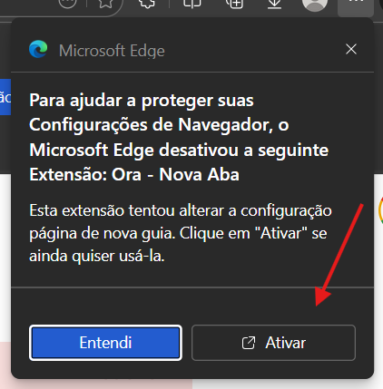
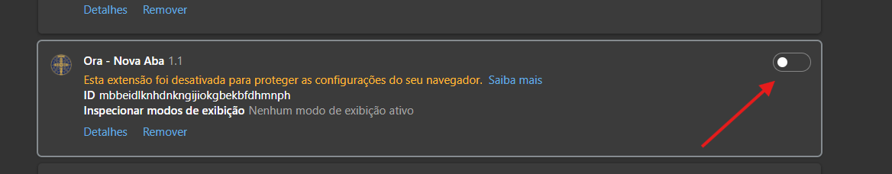

Alguns navegadores como Chrome e Edge podem bloquear extensões instaladas que modificam a tela inicial. Siga os passos abaixo para liberar o Ora no seu navegador.
Clique no botão + ou pressione Ctrl + T no seu teclado para abrir uma nova aba.
Uma caixa de diálogo aparecerá perguntando: "Esta é a página de nova guia que você esperava?".
Clique em "Manter alterações" (ou Keep changes).
⚠️ Atenção
Se você clicar em "Restaurar", a extensão será desativada e você voltará para a página padrão do Google.
Se aparecer uma barra de rodapé do Google na parte inferior da tela:
O Edge possui uma proteção extra. Assim que a instalação terminar, uma barra de aviso aparecerá no topo.
Clique no botão "Ativar extensão" (ou Turn on extension).
Depois clique no botão da imagem abaixo para ativar a extensão:
Ao abrir uma nova aba pela primeira vez, o Edge pode perguntar novamente se você deseja manter o Ora.
Confirme clicando em "Manter alterações".